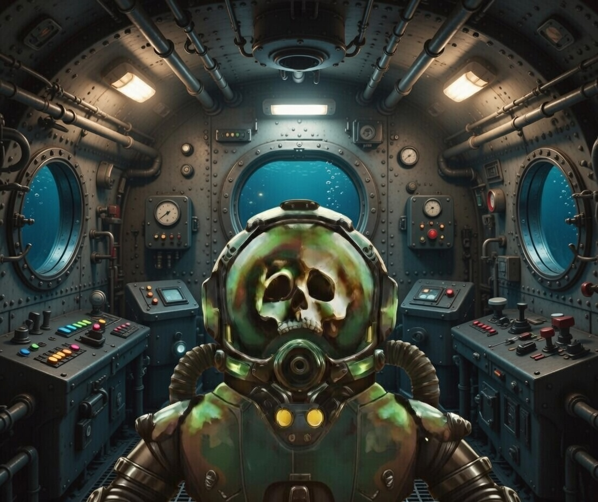

Has decidido llevar los minerales contigo. Aunque no has cumplido con tu misión, has tomado un riesgo al llevar los minerales contigo.
No has completado tu misión, pero también al vender los minerales tu has obtenido una recompensa valiosa mas de la que ofrecian de la mision.
Has demostrado ser un aventurero valiente y astuto, aunque no te vuelvan a pedir la misma mision has demostrado que puedes con misiones de alto riesgo.
